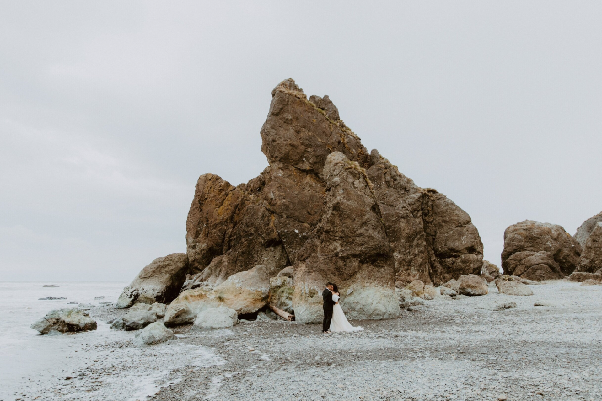

Welcome
Hi there! Here you will find the design system for my photography site. This design system explores the typography, colors, logos, navigation, cards, session info, and page patterns of my site. Through these elements, I hope to convey an organic and authentic feel. I chose various earthy shades of brown for my typography in order to embody the outdoors. My photography is heavily inspired by unposed human connection and nature. I hope these feelings can be sensed by my site visitors as they explore my photography online.
